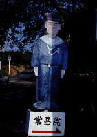
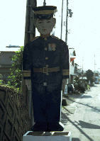
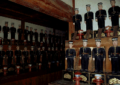
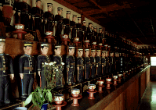
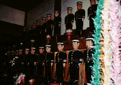
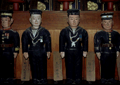
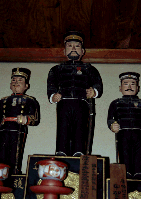
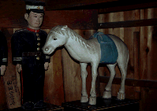
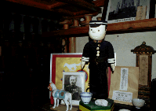
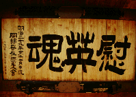

常昌院/静岡県岡部町
静岡は岡部町に兵隊寺と呼ばれる寺あり。
日露戦争で戦死した岡部出身者の英霊の供養のため、兵隊の木像を奉ってある寺だ。
旧帝国海軍兵をかたどった看板を目印に急な坂を登るとこじんまりとしたお堂がみえる。常昌院の本堂である。ちなみに看板の裏側は陸軍の兵隊さんになっている。いい看板だ。ケンペ−君みたいだぞ。
 
寺の人に声を掛けて入った本堂の中は兵隊さんで一杯だった。その数223体。本尊を囲む様に二重のコの字状に配置されている。高さ50センチ程度のこの像、一体一体亡くなった本人に似せて造られているという。見れば、それぞれに名前と出身地が記されていて、軍服や階級章などもそれぞれの兵隊のものとなっている（尤も戦死者は二階級特進だから階級章が生前のものかどうかは疑わしいが）。
  
とはいうものの、造った人は一緒なので何となく同じ作風の顔で、しかも無表情ときている。
それが223体ズラリと並んでいる光景はかなり不気味と言わざるを得ない。兵隊さんだけに生前もこのように一糸乱れずに整列していたのだろう。うむー、濃ゆい。
気になったのは両コーナーに奉られている馬の像。これもやっぱり地元出身なのか、それともエラい兵隊さんの愛馬だったのだろうか。そういえばエラい兵隊さんの像はヒラの兵隊さんの像に比べてちょっと大きめに造ってある。この辺、軍人は階級社会である、という事を如実に表現してあって興味深い。
死んでからも階級で差別されるか、辛いなあ。
  
それにしてもこの寺、いつからある寺なのか知らないが、堂内は兵隊像だけでなく日露戦争当時の兵隊さんの出征写真などが多く掲げられており、以外の時代のものがほとんど無い。堂内の時間は完全に日露戦争当時で停まってしまっている。何故日露戦争なのか、大平洋戦争の方が戦死者も多かっただろうに。やっぱ勝ち戦だったからなのかなあ。
本尊の脇には兵隊さんのファンシーなぬいぐるみと亡くなった兵隊さんの遺影などが一緒に飾られていたりして、物凄いアンバランスでした。
 
1998.9
珍寺大道場 HOME